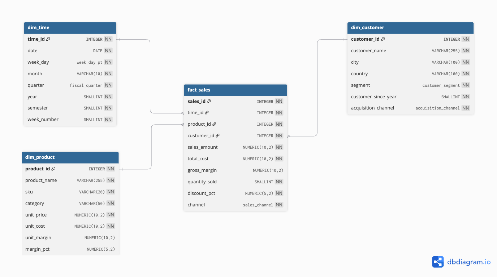

A SoundByte é uma empresa de tecnologia de áudio que comercializa produtos e serviços em sete países. Seu portfólio abrange cinco categorias — Hardware, Streaming, Acessórios, Serviços e Conteúdo Digital — e os dados de vendas de 2023 e 2024 estão armazenados em um Data Warehouse modelado como esquema estrela.
O Data Warehouse já está modelado. Seu trabalho começa na conexão dos dados, não na modelagem.
sales_amount, total_cost, gross_margin, quantity_sold, discount_pct e channel.date, week_day, month, quarter, year, semester e week_number.unit_price, unit_cost, unit_margin e margin_pct já calculados.segment (Basic, Standard, Premium), customer_since_year e acquisition_channel.
Cada visualização deve, ao menos implicitamente, responder a uma ou mais das perguntas abaixo.
O dashboard deve conter no mínimo 5 visualizações em uma única tela coesa, com ao menos um filtro interativo. As seis abaixo são obrigatórias.
| # | Visualização | Campos sugeridos | Pergunta respondida |
|---|---|---|---|
| V1 | Linhas — receita mensal | date (month), year, SUM(sales_amount) | Tendência e sazonalidade |
| V2 | Barras agrupadas — receita por quarter | quarter, year, SUM(sales_amount) | Comparativo 2023 vs 2024 |
| V3 | Barras horizontais — top 10 produtos | product_name, SUM(sales_amount), margem % | Pareto com visão de margem |
| V4 | Barras duplas — receita e margem por categoria | category, SUM(sales_amount), gross_margin % | Mix de portfólio e rentabilidade |
| V5 | Mapa ou barras — receita por país | country, SUM(sales_amount) | Distribuição geográfica |
| V6 | Barras + linha — receita e ticket médio por segmento | customer_segment, SUM(sales_amount), Ticket Médio | Valor gerado por segmento |
Filtros interativos
Ao menos um filtro funcional é obrigatório. Os quatro abaixo são os recomendados — filtros adicionais são pontuados como diferencial.
Se você já tem experiência com o Tableau, use como referência rápida. Cada bloco abre com o detalhamento.
SoundByte_DW.xlsx e arraste a aba fact_sales para a área central de modelagem.fact_sales na área de modelagem, arraste dim_time ao lado: o Tableau detecta time_id e sugere o relacionamento — confirme. Repita para dim_product (via product_id) e dim_customer (via customer_id). Ao final você terá a estrela visual.fact_sales.time_id = dim_time.time_id).date em Colunas (botão direito › Mês, discreto), year em Cor, SUM(Sales Amount) em Linhas. Adicione filtro de year.quarter em Colunas, year em Cor, SUM(Sales Amount) em Linhas. Mude para Barra em Mostrar-me.product_name em Linhas, SUM(Sales Amount) em Colunas, ordenado decrescente. Filtro › Principais › Top 10 por SUM(Sales Amount). Arraste Gross Margin % para Cor.category em Linhas; SUM(Sales Amount) e Gross Margin % em Colunas (dois eixos). Botão direito no segundo eixo › Eixo duplo.country para a área de visualização e SUM(Sales Amount) para Cor. Opção B (barras) — country em Linhas, SUM(Sales Amount) em Colunas, ordem decrescente. A opção B é mais confiável com nomes de países em português.customer_segment em Linhas; SUM(Sales Amount) e depois Ticket Médio em Colunas. Botão direito no segundo eixo › Eixo duplo. No cartão de Marcas do segundo eixo mude o tipo para Linha — vira um combo de barras + linha. Arraste year para Cor no eixo da receita.SUM(Sales Amount) em Texto, formatado como moeda. Crie o campo Variação YoY Receita e arraste year para Colunas. Fonte do valor principal em 28 pt ou mais.Gross Margin % em Texto (porcentagem com uma casa), year em Colunas. Use coloração condicional: verde quando 2024 > 2023, vermelho quando inferior.public.tableau.com/app/profile/SEU_PERFIL/viz/NOME.// Gross Margin % — formate como porcentagem (0,0%)
SUM([Gross Margin]) / SUM([Sales Amount])
// Ticket Médio
SUM([Sales Amount]) / COUNT([Sales Id])
// Variação YoY Receita — usado no KPI_Receita
(SUM([Sales Amount]) - LOOKUP(SUM([Sales Amount]), -1))
/ ABS(LOOKUP(SUM([Sales Amount]), -1))Pelo Canvas, até 18.10.2026 às 23h59.
country no Excel para inglês (Brazil, Chile…) antes de importar.unit_margin e margin_pct já estão no arquivo. Criar campos calculados no Tableau é opcional, mas recomendado por serem dinâmicos: eles respeitam os filtros, a coluna estática do Excel não..xlsx puro (sem macros). Se persistir, exporte cada aba como CSV separado e conecte individualmente no Tableau.